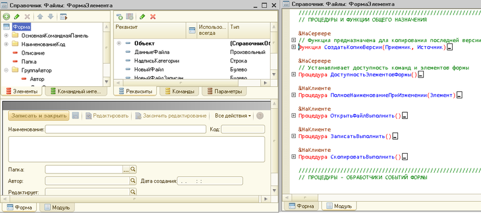
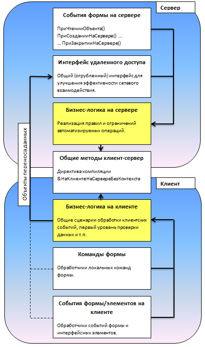

Цель статьи – показать применение шаблонов Remote Facade и Data Transfer Object к структуризации кода, управляемой формы в среде 1С 8.2.
Введение
Начнем с небольшого описания понятия «управляемая форма» и связанных концепций платформы 1С. Знатоки платформы могут пропустить этот раздел.
В 2008 году стала доступна новая версия платформы 1С: Предприятие 8.2 (далее Управляемое приложение), которая полностью меняет весь слой работы с интерфейсом. Сюда относится и командный интерфейс, и формы, и оконная система. При этом не только меняется модель разработки пользовательского интерфейса в конфигурации, но и предлагается новая архитектура разделения функциональности между клиентским приложением и сервером.
Управляемое приложение поддерживает следующие типы клиентов:
В управляемом приложении используются формы, построенные на новой технологии. Они называются Управляемые формы. Для облегчения перехода прежние формы (т.н. Обычные формы) также поддерживаются, но их функциональность не развивается и они доступны только в режиме запуска толстого клиента.
Основные отличия управляемых форм для разработчика:
Перечислим директивы компиляции методов формы:
&НаКлиенте
&НаСервере
&НаСервереБезКонтекста
&НаКлиентеНаСервереБезКонтекста
Проиллюстрируем перечисленное. На скриншоте пример управляемой формы и ее модуля в режиме разработки. Найдите декларативное описание, реквизиты, директивы компиляции и т.д.

Все дальнейшие рассуждения будут о правой части иллюстрации, о том, как структурировать код модуля и какие принципы позволят реализовать эффективное клиент-серверное взаимодействие.
Обозначим проблему
Прошло уже несколько лет как новая версия платформы 1С активно используется и выпущено множество решений (конфигураций) как фирмой 1С, так и ее многочисленными партнерами.
Сложилось ли за это время у разработчиков единое понимание принципов клиент-серверного взаимодействия при создании форм, и изменился ли подход к реализации программных модулей в новых архитектурных реалиях?
Рассмотрим структуру кода (модуль формы) в нескольких формах одной типовой конфигурации и попробуем найти закономерности.
Под структурой будем понимать секции кода (чаще всего это блоки комментариев) выделенные разработчиком для группировки методов и директивы компиляции этих методов.
Пример 1:
Секция обработчиков событий
Метод – наклиенте
Метод – насервере
Метод - наклиенте
Секция служебных процедур и функций
Вспомогательные функции управления вводом
Пример 2:
Служебные процедуры и функции
Документы оплаты
Ценности
Обработчики событий
Пример 3:
Служебные процедуры на сервере
Служебные процедуры на клиенте
Служебные процедуры на сервере без контекста
Обработчики событий шапки
Обработчики событий команд
Пример 4:
Процедуры общего назначения
Обработчики событий формы
Процедуры подсистемы «контактная информация»
По сути, структура кода отсутствует, или мягче говоря, она аналогична тому, что было в формах 8.1:
Зачем нужна структура кода?
Почему существующий стандарт разработки от фирмы 1С не помогает?
Посмотрим опубликованные на дисках ИТС и в различных «Пособиях разработчика…» принципы, рекомендуемые при написании управляемой формы.
Это лозунги, абсолютно верные, но как их реализовать? Как минимизировать число вызовов, что значит программировать в клиент-серверном режиме?
Шаблоны проектирования или мудрость поколений
Клиент-серверное взаимодействие используется в различных программных технологиях не один десяток лет. Ответ на обозначенные в предыдущем разделе вопросы давно известен и суммирован в двух базовых принципах.
Слово Мартину Фаулеру, его описание данных принципов:
Примеры шаблонов в платформе 1С
Прикладной программный интерфейс доступный разработчику при разработке управляемой формы, содержит много примеров данных принципов.
Например метод ОткрытьФорму(), типичный «огрубленный» интерфейс.
ПараметрыОткрытия = Новый Структура("Параметр1, Параметр2, Параметр3", Значение1, Значение2, Значение3);
Форма = ОткрытьФорму(ИмяФормы, ПараметрыОткрытия);
Сравните с принятым в v8.1 стилем.
Форма = ПолучитьФорму(ИмяФормы);
Форма.Параметр1 = Значение1;
Форма.Параметр2 = Значение2;
Форма.Открыть();
В контексте управляемой формы множество «Объектов переноса данных». Можно выделить системные и определяемые разработчиком.
Системные моделируют на клиенте прикладной объект, в виде одного или несколько элементов данных формы. Создать их вне привязки к реквизитам формы нельзя:
ДанныеФормыСтруктура
ДанныеФормыКоллекция
ДанныеФормыСтруктураСКоллекцией
ДанныеФормыДерево
Преобразование системных объектов переноса данных в прикладные типы и обратно выполняется методами:
ЗначениеВДанныеФормы()
ДанныеФормыВЗначение()
КопироватьДанныеФормы()
ЗначениеВРеквизитФормы()
РеквизитФормыВЗначение()
Часто явное преобразование используется при адаптации существующего решения. Методы могут ожидать (использовать особенности) входные параметры, например ТаблицаЗначений, а не ДанныеФормыКоллекция, или метод был определен в контексте прикладного объекта и стал недоступен для прямого вызова из формы.
Пример 1С v8.1:
// на клиенте в контексте формы
ЗаполнитьКэшПользователей(ПодразделениеСсылка)
Пример 1С v8.2:
// на сервере в контексте формы
ОбработкаОбъект = РеквизитФормыВЗначение("Объект");
ОбработкаОбъект.ЗаполнитьКэшПользователей(ПодразделениеСсылка);
ЗначениеВРеквизитФормы(ОбработкаОбъект, "Объект");
Объекты переноса данных, структура которых определяется разработчиком это небольшое подмножество типов доступных и на клиенте и на сервере. Наиболее часто в качестве параметров и результатов методов «огрубленного» интерфейса используются:
Примитивные типы (строка, число, булево)
Структура
Соответствие
Массив
Ссылки на прикладные объекты (уникальный идентификатор и текстовое представление)
Пример: метод принимает список заказов для изменения статуса и возвращает клиенту описание ошибок.
&НаСервереБезКонтекста
Функция СерверИзменитьСтатусЗаказов(Заказы, НовыйСтатус)
Ошибки = Новый Соответствие(); // [заказ][описание ошибки]
Для Каждого Заказ Из Заказы Цикл
НачатьТранзакцию();
Попытка
ДокОб = Заказ.ПолучитьОбъект();
…. другие действия, возможно не только с заказом…
Исключение
ОтменитьТранзакцию();
Ошибки.Вставить(Заказ, ОписаниеОшибки());
КонецПопытки;
КонецЦикла;
Возврат Ошибки;
КонецФункции // СерверИзменитьСтатусЗаказов()
Структурируем код
Главные цели, которые должен отражать модуль управляемой формы и подходы к решению.
Ниже приведена базовая структура модуля, реализующая перечисленные цели.

////////////////////////////////////////////////////////////////////////////////
// <(c) Автор="<?"", ИмяПользователя>" Дата="<?"", ДатаВремя,"ДФ=dd.MM.yyyy">"/>
// <Описание>
// <?>
// </Описание>
////////////////////////////////////////////////////////////////////////////////
// ПЕРЕМЕННЫЕ МОДУЛЯ
////////////////////////////////////////////////////////////////////////////////
// НА СЕРВЕРЕ
//******* СОБЫТИЯ НА СЕРВЕРЕ *******
&НаСервере
Процедура ПриСозданииНаСервере(Отказ, СтандартнаяОбработка)
//Вставить содержимое обработчика
КонецПроцедуры
//******* ИНТЕРФЕЙС УДАЛЕННОГО ДОСТУПА *******
//******* БИЗНЕС-ЛОГИКА НА СЕРВЕРЕ *******
////////////////////////////////////////////////////////////////////////////////
// ОБЩИЕ МЕТОДЫ КЛИЕНТА И СЕРВЕРА
////////////////////////////////////////////////////////////////////////////////
// НА КЛИЕНТЕ
//******* БИЗНЕС-ЛОГИКА НА КЛИЕНТЕ *******
//******* КОМАНДЫ *******
//******* СОБЫТИЯ НА КЛИЕНТЕ *******
////////////////////////////////////////////////////////////////////////////////
// ОПЕРАТОРЫ ОСНОВНОЙ ПРОГРАММЫ
Связанные вопросы
В заключение обозначим несколько направлений, о которых полезно подумать при программировании клиент-серверного взаимодействия.